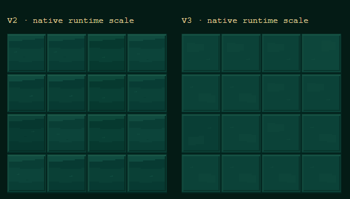
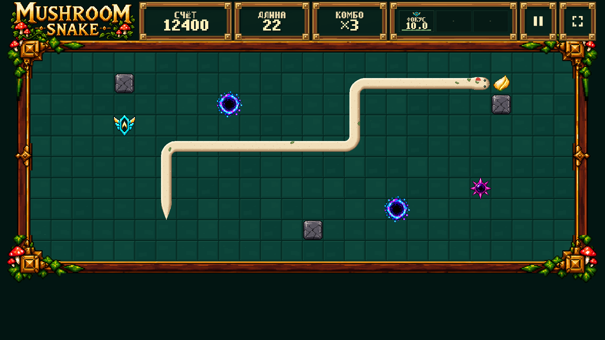
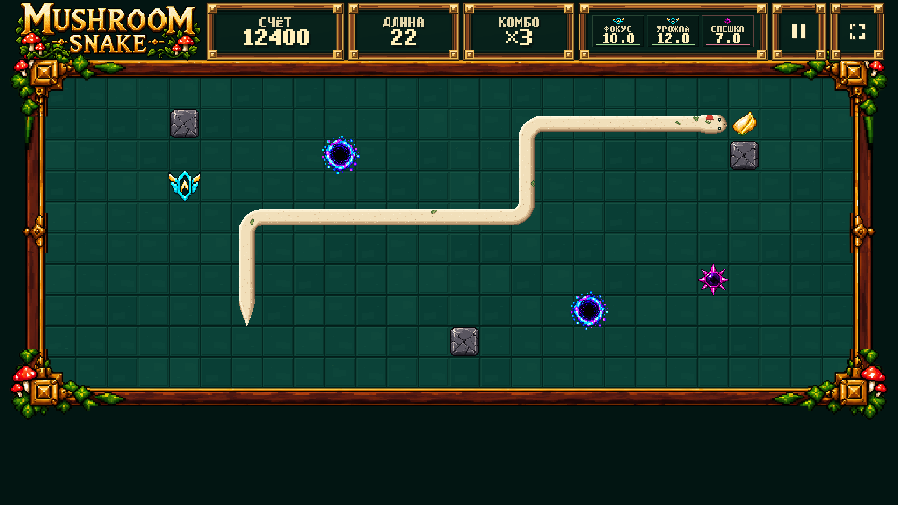
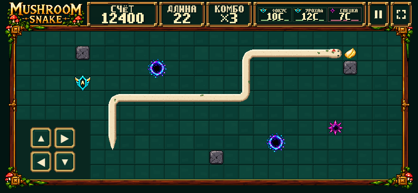
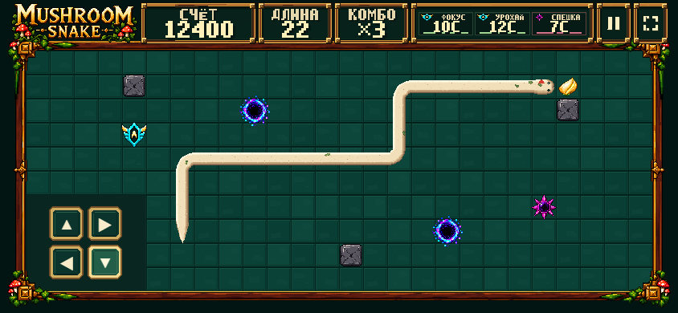

Composition baseline: 31efcd4. Только surface floor, содержимое effect area, вес pause/fullscreen glyphs и finish D-pad. Геометрия, V5.6 Snake, cabinet/frame, объекты и механики сохранены.
Ровно пять captures, без shrink-to-fit: один image pixel = один CSS pixel при browser zoom 100%. Большие desktop captures прокручиваются горизонтально. Это замороженная DEV QA fixture: score 12400, length 22, combo ×3; не результат игрового прохождения.
Targeted regression: 51/51; states 0/1/2/2+1 проверены на 1920×1080, 1366×768, 844×390. Layout и DOM bounding boxes совпадают с baseline; console errors/warnings, failed requests и HTTP ≥400 = 0 в новых QA contexts. Raw evidence · Report / repeat commands · Local DEV Training.
STOP — ожидается human visual review. FOREST CABINET + ARENA + HUD не объявлены финально VISUAL LOCK до вашего approval. TEST/Production не публиковались.
Одинаковый 4×4 runtime crop. 6 оригинальных 68px variants; внутренний bevel contrast −30%, внешние seam pixels byte-identical. Patina/wear: по 1% selection buckets.




Нажата нижняя правая кнопка ↓. Input принят canonical command queue; release очищает pressed state. Placement и 44×44 hitboxes неизменны.
